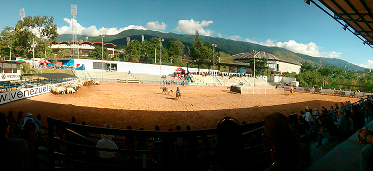

Sus encantadores rincones, su particular arquitectura
colonial, sus acogedoras posadas, maravillosos
paisajes y agradable clima de montaña, hacen de
San Cristóbal, capital del estado Táchira, un lugar
muy atractivo de Venezuela.
La ciudad andina fue fundada el 31 de marzo de 1561,
por el capitán Juan Maldonado y Ordóñez de
Villaquirán, junto con 35 soldados en las riberas
del río Torbes. De hecho, San Cristóbal es una
de las ciudades más antiguas de Venezuela con 459
años, su proximidad con la frontera colombiana es de
tan solo 57 km.
La gente de la ciudad es conocida por ser amigable
con los visitantes y francamente abierta y dispuesta
hacia todos aquellos que estén, en cualquier
circunstancia, en su territorio. La disposición para
recibir a los turistas y visitantes le ha valido el
nombre de "Ciudad de la Cordialidad" , cuenta con una
población de acuerdo al Censo de Población y Vivienda
del año 2011 estimada de 263.765 habitantes que
representan un 22,57% de la población total del estado
Táchira ocupando el puesto número 7 de las ciudades
más pobladas del país.
San Cristóbal tiene un régimen climático es
sub-tropical a tropical de altura. Tiene una
temperatura media anual entre 11ºC y 23,2ºC.
BREVE HISTORIA
Los precursores europeos que llegaron al territorio
del actual estado Táchira provinieron, en su mayoría,
de los núcleos establecidos en la Nueva Granada.
En 1573 se creó la Provincia de La Grita, con el
nombre de Espíritu Santo, la cual dependía en lo
político de Tunja y en lo judicial de Santa Fe.
En 1607 se creó el Corregimiento de Mérida, y
La Grita y San Cristóbal quedaron bajo su
jurisdicción. En 1622 se estableció la Gobernación
de Mérida y en 1856 se creó la Provincia del Táchira,
con los cantones de La Grita, Lobatera, San Antonio y
San Cristóbal.
En 1863 las Provincias de Mérida, Maracaibo,
Trujillo y Táchira. En 1881, Táchira, Mérida y
Trujillo formaron el Gran Estado Los Andes. Esta
unión duró hasta 1899, cuando se le devolvió la
categoría de estado autónomo. Finalmente, en 1909,
Táchira fue ratificado como estado, condición que ha
mantenido hasta el presente.
ENTRETENIMIENTO Y TURISMO
Al albergar la ciudad más de una decena de
centros universitarios, San Cristóbal es una
ciudad de alegre vida nocturna, siendo conocida
la liberalidad y espontaneidad del san
cristobalense a la hora de elegir su lugar de
entretenimiento lúdico, que no excluye sitios
públicos como el estacionamiento de la Plaza de
Toros y diversos miradores. Numerosos centros
nocturnos, bares, tascas, discotecas y clubes
se encuentran diseminados en toda la zona urbana
y es fácil encontrar abierto uno de estos locales
cualquier noche de la semana.
Sin embargo el fútbol es la más reconocida
fuente de entretenimiento masivo para la ciudad,
que ha contado en su historia reciente con tres
clubes campeones del torneo nacional; el
Deportivo Táchira y los desaparecidos Atlético
San Cristóbal y Nacional Táchira.
La infraestructura hotelera experimentó un
proceso de renovación para dar mayores
comodidades a los visitantes, esto a raíz
de haberse efectuado en la ciudad varios
encuentros de la Copa América de 2007.
GASTRONOMÍA
Pisca Andina
En esta ciudad el primer plato del día es la
pisca andina, caldo que contiene huevos, leche
y cilantro, y que se puede degustar con la
tradicional arepa, para muchos este es el
secreto para comenzar la jornada con energía
y optimismo.
También se acostumbra desayunar perico
(preparación de huevo revuelto, tomate,
cebolla y especias) con queso fresco asado,
chorizos fritos, nata o mantequilla, acompañados
con café con leche.
Otras comidas típicas de la región utilizan
como ingrediente principal el maíz, leche,
huevos, queso, cochino y granos, que se
transforman en deliciosos pasteles, como el pan
de queso con bocadillo y el camaleón.
Los guisos y sopas que incluye el bollo andino,
mute, chanfaina, bollos de mazorca, ajiaco,
sancochos de bagre o de bocachico, cochino frito,
hervido de gallina, caldo de papa, chorizos,
chinchurria, morcón, morcillas y sopas de arvejas,
garbanzos o quinchoncho, son otras de las delicateses
de esta región andina.
Bebidas y postres
Entre sus bebidas se encuentra la leche de burra
y el masato dulce, una espesa crema de maíz que
bien puede funcionar como desayuno o postre.
Bebidas alicoradas a base de miche blanco,
mistela y chicha andina. Además, elaboran una
variedad de panes producidos en la región, como
los deliciosos y delicados panecillos redondos
preparados con almidón, conocidos como
almojábanas, y las quesadillas con queso y
bocadillo.
FERIA INTERNACIONAL DE SAN SEBASTIAN
La Feria Internacional de San Sebastián es
una de las más importantes fiestas patronales
de Venezuela. Tiene lugar en la ciudad de San
Cristóbal, capital del estado Táchira,durante
la segunda quincena del mes de enero de cada
año. Esta celebración, conocida como la
FISS
es escenario propicio para multitud de manifestaciones
artísticas que son presentadas para el
disfrute de tachirenses y turistas de toda
Venezuela e incluso más allá de sus
fronteras.
El Instituto de la Feria Internacional de San
Sebastián, Turismo y Artesanía Municipal y la
Dirección de Cultura del Estado Táchira
establecen los lineamientos generales de las
festividades y programan actividades culturales
y recreativas de diversa índole. Sin embargo,
toda la ciudad de San Cristóbal se vuelca a la
alegría de las fiestas, por lo que además de las
iniciativas oficiales, se puede disfrutar de una
abultada oferta de presentaciones musicales y
dancísticas organizadas por instituciones
privadas, tales como clubes y hoteles.
En la sede de ASOGATA,
cuyas instalaciones sirven de escenario para
una apretada
agenda de conciertos de música tradicional
venezolana, en el marco de la importante
exposición ganadera que anualmente se lleva
a cabo durante la Feria. Exponentes de los
géneros folclóricos de Los Andes (y otras
regiones como Los Llanos) se dan cita para
mostrar lo mejor de su repertorio. La
Exposición de Pabellones, importante evento
comercial internacional que también se realiza
en el área circundante a la Plaza de Toros,
da cabida a un volumen representativo de
artesanos que ofrecen sus productos. Allí
también son presentados, de modo más informal,
agrupaciones musicales populares que animan el
evento.

El desfile inaugural de la Feria Internacional
de San Sebastián se ha ganado un lugar especial
dentro de esta celebración. Es notable la
participación de distintas comunidades que
hacen vida en el estado Táchira, tales como
municipios, empresas privadas, institutos
educativos y colonias extranjeras, entre otros,
las cuales se dedican a elaborar las carrozas
que desfilan desde mediados de la mañana por
las vías principales de la ciudad, acompañadas
por las más importantes bandas marciales del
estado Táchira. Para tener una idea de las
proporciones del desfile, es usual la
participación de más de una docena de carrozas
y similar número de bandas marciales, abundantes
comparsas (alrededor de veinte) entre las cuales
se cuentan varias provenientes de otros estados
del país, y un importante número de delegaciones
que muestran números musicales y de danza a lo
largo de la jornada (alrededor de cincuenta).
Las carrozas concursan por premios en metálico
para los tres primeros lugares, y desde hace un
tiempo su temática va determinada por un concepto
que cada año es definido por la Coordinación General
del desfile.
La elección de la Reina de la Feria
Internacional de San Sebastián
es otro de los eventos emblemáticos de la temporada. A este
concurso de belleza son invitados destacados
intérpretes musicales nacionales e
internacionales de los más diversos géneros,
para animar el certamen y garantizar la
categoría que desde hace años es una constante
de dicho espectáculo. Éste es, junto al desfile,
uno de los primeros y más grandes espectáculos
de la Feria, aparte, claro está, de la importante
programación taurina, que en cierta medida marca
el pulso de la celebración.